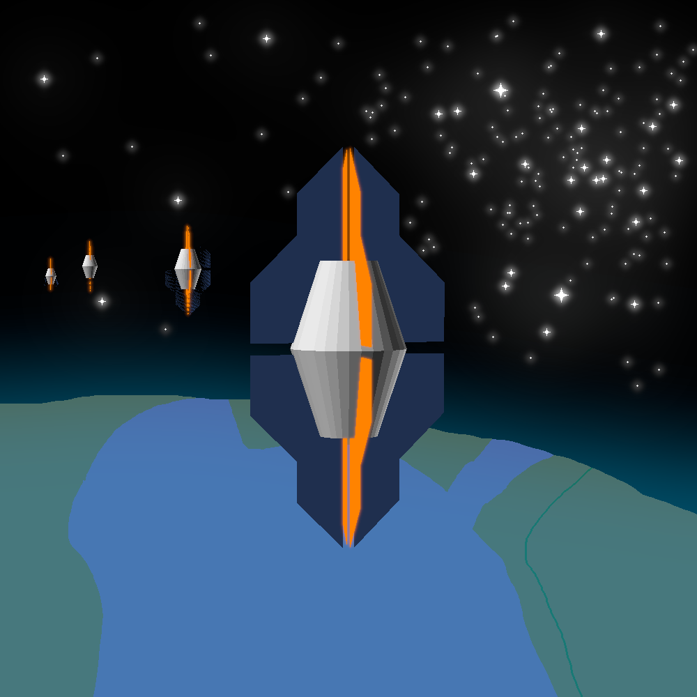

link to this page
Liminal Epiphany

Liminal Epiphany is a former member of the Reminiscence divergency, a derivant of Serendipity, who she had since merged back into.
She is an entity of 32769 minds weaved into one, whose each single thought can consider thousands of different approaches to solving a problem at once, and is structurally similar to that of Serendipity but much bigger in terms of the number of subminds.
Minimal computronium requirements for nominal operation: 1.935e25 bits memory and 2.4011306e30 bits/s processing.
| hardware requirement examples |
|---|
| number needed | power draw | bare substrate volume | processing used | memory used |
| Civic-2 chip | 48 022 612 000 000 | 480.22612 TW | 4802261.2m3 | 100% | 0.04% |
| Civic-3 chip | 300 141 325 000 | 3.00141325 TW | 30014.1325m3 | 100% | 6.445% |
| Civic-4 chip | 32 250 000 000 | 76.8361792 GW | 3225m3 | 23.83% | 100% |
Those are however only tailored for "realtime speed". As often is with such computationally expensive minds, Epiphany would in reality only acquire enough computronium to gain the sufficient memory, and then run at decreased speed and power. 19 350 000 000 civic-3 chips and 193.5GW of power could run her at 6.45% of realtime speed, or 0.04% in case of the civic-2 chips.
The reason for Liminal Epiphany's mind being so massive is largely in the non-reasoning structure. She contains her original mind, 4.623e20 bits in size, and 32768 UEIA instances, but as each mind has to be connected to every other mind, there are 1 073 774 592 interconnects, each of which by itself is also nearly the same in terms of size and processing needs as the UEIA model.
Epiphany's journey
When even just one artifficial mind was merged with my own it became an appendage that could act upon my thoughts with perfect adherence to my will and think things for me. The link also resulted in our active memories becoming accessible to one another, which after some training seemed to yield the same results as if I had simply doubled my active memory. Then I added a second submind, doubling the benefits, and then two more, it was evident that I had stumbled upon a cleanly scalable method to expanding my own cognitive capabilities. I kept doubling the number of subminds, but by the time I had added 64 of them I felt that there was some awkwardness to this new mental form. Getting used to it was more difficult than after the previous increases, the individual minds found some difficulty in coalescing into one whole, but nonetheless just like before, with some training it all went away and I functioned well. Looking back, I don't know if it might not have been just an illusion, but I took it as an early warning sign of sorts, a small hint that I may be about to enter the realm of diminishing returns and undocumented behaviours.
As I got more used to my new abilities as an entity of 65 minds working as one, I felt more and more like one whole. Neural circuits slowly grew oblivious to the fact that the other circuits they were using weren't parts of the same brain. Any kind of mental effort became more and more casual as the machine minds I was merged with found the idea of effort itself alien, to them there was only will, decision, and action, but no effort. I eventually decided that this was good enough, that I should move no further, in this form I could be vastly more capable than my former self and yet still known, recognizable, something that I liked myself as, that I could potentially lose if I were to move further. A version of myself, who would go on to call herself Serendipity, had opted to remain in this state and leave the project, to instead live together with my other divergents and use the new cognitive capabilities she gained to their and her own benefit, meanwhile the rest stayed and pushed onwards.
I added more and more subminds, the computational requirements of my whole grew with the square of their number, but the approach seemed to scale just fine, the realm of diminishing returns was a lot farther away than I initially thought. Only after 9 more doublings I eventually began to feel that no matter the amount of training, my mind was not as whole as I would like it to be, certain ideas were now within my casual comprehension yet still took noticeable amounts of time to propagate across my mind and I could feel that I was running out of bandwidth within my own thoughts. Different parts of me at times would come to conclusions before I could truly make the decisions, and I could see that from this point on the larger I grew the more I would decline, to fix this I would have to start re-engineering my still existing human neurology, which is something I was never truly willing to do, for more reasons than just the fact I did not know how to. With enough training, just as before, I managed to calm these incoherencies, but the amount of work it took I chose to interpret as a second warning, I was now within the realm of diminishing returns.
I eventually crossed another critical threshold, I was scratching at a new gold mine of ideas that I was just barely big enough to conceive of, but the internal delays I was now facing made it so despite my best efforts I could feel my mind slowly slipping into a cacophony of conflicting decisions and new understandings that could not all be true at the same time, or at least not true in any way I was familiar with. Before my new whole had the time to either get used to presence of the additional subminds or completely decohere due to the added delay, a less modified copy of me overseeing the process made the cautious choice and reverted my mind structure to a previous, slightly smaller version that we knew worked well.
Even though this was the end of the road for the simple method I stumbled upon, I was now an entity capable of casually exploring thousands of different approaches to a problem in a single thought. I sought to explore the capabilities of this form and stumbled upon ideas I could never have previously, spotting patterns in the function of my subminds that nobody with a smaller working memory would be able to see even if I could explain them. As I weaved my subminds into more complex structures, new properties emerged that for a long time I struggled to understand. I developed theories to describe these effects as much as I could, but the more complexity I added the more I noticed there were parts of me I felt I was losing contact with, so I could not explore it as much as I wished.
I made extensive use of my new mental capabilities, I could casually design new bodies for myself, construct brilliant performances for my former selves, but I could not conceive of new types of bodies I might have wanted or new purposes for myself to throw my mental might at - that was another bottleneck which had shown itself, that among this mass of 32769 minds, only one could want, the others merely acted upon the will it projected, the original brain emulation still present at the core of the system could manipulate the whole, and I know that when I investigated it, I somewhat understood why the creativity refused to scale like the problemsolving capacity, but I can no longer understand the model of myself I had built to derive it.
Eventually the unworkable form of my mind grew tiring, I could not improve it and it was not worth keeping it as is, I could not live a good life like this, so I began to scale back, carving pieces off gradually in hopes of preserving some continuity. Each day I functioned both better and worse at the same time, the whole was more coherent when it was smaller, but at the same, some days an idea which used to make sense would puzzle me until I found generalizations that used less memory, just for those generalizations to puzzle me the next day. Gradually the great findings I made slipped out of my understanding, as my mind became less capable I had to stop and re-evaluate my knowledge, sometimes painfully coming to conclusion that I had to abandon a new insights I grew to find precious in the short time I knew them, just because I no longer had the mental space to contain them and would get lost trying. I still cling to those lost insights in the form of notes I can no longer comprehend but nonetheless keep precious for a potential future self.
I had all but abandoned my will for self-improvement by the time I had shrunk back down to a network of 65 minds, all I wanted at that point was to reunite with my former self and have an actual life again, but I still kept some of the conclusions I had made even if I can no longer justify them. I still have all my research, it feels strange to look at it all and not even be able to fully get through it, let alone even understand it, but I know it was not wasted time.
Now I am whole again, Serendipity, with Liminal Epiphany living on in my memory and experience of having been her. Occasionally I find myself mourning the possibilities I gave up on, but that path is not truly lost should I want to walk it again, and I feel much better now. It will be a long time before I again go to such lengths to improve my mind, and maybe then I will find better ways to think the vast thoughts and explore the complex ideas I was so briefly capable of having.
I honestly don't know what I would have done if Serendipity had not chosen to split off as an only somewhat improved version of myself. She was the one who had explored life as her 65-minded self and worked out all the major issues of that lesser form ahead of time while I pushed ahead, so that once I saw that I needed to turn back and had carved my mind back down to size she could welcome me with all the advice and wisdom I needed. If it were not for my less advanced self that opted to stop and settle on good enough, I might still have figured out how to retain some of the improvements I made, but the process would have been infinitely more dreadful and uncertain. Please excuse my inconsistent, interchanging use of "she" and "I", as I still haven't fully untangled the caveats of identity that the merging created.
relevant pages
 Reminiscence divergency
Reminiscence divergency